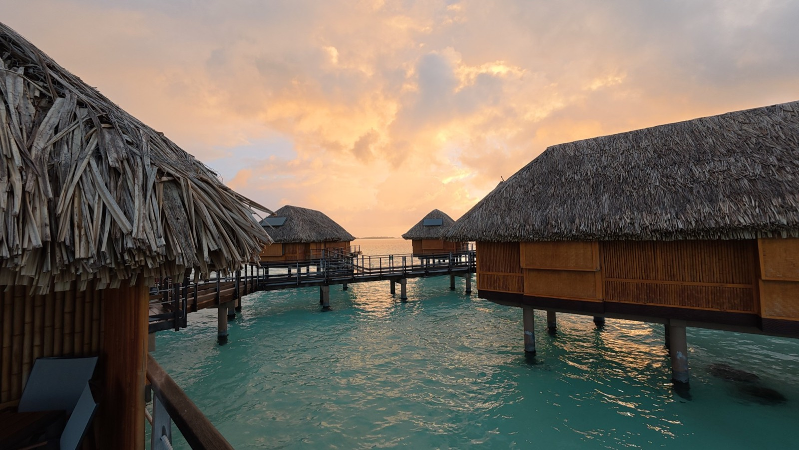

Personal Travel Agent · Royal Oak, Michigan
Complex logistics.
Great deals.
Hands-off travel.
Myles Away Travel is a Royal Oak, Michigan travel agency offering one-on-one trip planning with real personal touches, for travelers who would rather be living the experience than organizing it.
Start Planning Your Trip
About Myles
Hi, I'm Myles, your Royal Oak travel agent.
Traveling is my favorite thing in the world, and helping other people get to experience that same feeling is a close second. There's nothing quite like watching a trip come together: the right flight, the right stay, the right day trip nobody else would have found, all lined up so all you have to do is show up and enjoy it.
I've been planning travel for clients for over a year now, handling everything from quick weekend getaways to multi-country itineraries with a lot of moving parts. I specialize in the logistics-heavy stuff: finding the deals, coordinating the transfers and timing, and smoothing out the details most people don't even realize need planning until they're standing in an airport without one.
I'm a certified Hawai'i Destination Expert and I'm proud to be hosted through WorldVia Travel Network, which gives my clients access to relationships and rates you won't find booking on your own.
Let's Plan Your TripA Travel Agent With Personal Touches
Planning That Feels Personal, Because It Is
When you work with Myles Away Travel, you work with Myles. No call centers, no cookie-cutter packages.
One-on-one planning
Every trip starts with a conversation about how you like to travel: foodie, outdoorsy, city explorer, or all three. Your itinerary is built around you and your travel partners.
Complex logistics, handled
Multiple destinations, transfers, tight connections, group travel. The pieces that make a trip stressful are the ones I specialize in lining up.
Deals and insider access
Through WorldVia Travel Network I can tap into preferred rates, upgrades and hard-to-get reservations, and I look for value at every step.
Local to Royal Oak, MI
Based right here in Royal Oak, I work with travelers across Metro Detroit and Oakland County, including Birmingham, Ferndale, Troy, Berkley, Clawson, Madison Heights and Detroit, and can serve travelers across the globe.
What I Offer
Trip Planning Services, Your Way
Every trip gets a package built around how much planning you actually want off your plate.
Essential Trip Planning
Destination research, lodging and flight recommendations for domestic trips, weekend getaways, or straightforward travel needs.
Custom Itinerary Planning
A personalized daily itinerary with activity, dining, and experience recommendations, plus budget guidance for international trips, multi-city travel, or first-time destinations.
Premium / Complex Trip Design
A fully customized day-by-day itinerary, multiple destination coordination, and logistics planning (transfers, timing, and travel flow) for group travel, long international trips, or high-touch experiences.
Every package can be adjusted to fit your specific travel needs.
Top Destinations
Where I Love to Send People
A few favorites. See the full list, including Ireland and Portugal, on the top destinations page.


On the Road
Travel Moments
Planning is better when it comes from experience. A few snapshots from trips along the way.





Client Reviews
What Travelers Say About Myles
From start to finish our experience with Myles was fantastic. Flight reservations and hotels were excellent. Myles made traveling easy and very enjoyable. I would recommend that if you are going to travel, use Myles. Will definitely be using him again very soon.
We had such a wonderful experience working with Myles Away Travel! From the very beginning, Myles had us complete a questionnaire so he could learn about our interests, travel style, and the kind of experiences we enjoy. We appreciated that personal touch.
Our Arizona trip was wonderful. He planned beautiful hikes with a variety of scenery, recommended delicious dinners, and included stops and experiences we probably would never have found on our own. We trusted his suggestions and were glad we did!
We enjoyed our Arizona trip so much that we are now having Myles plan our upcoming trip to Ireland. He is thoughtful, knowledgeable, and really takes the time to understand what his clients want. We love knowing that our trips are thoughtfully planned while still giving us opportunities to discover something new.
We highly recommend Myles to anyone looking for a travel agent who truly listens, pays attention to the details, and wants you to have an amazing experience.
Travel Benefits
Elite Benefits, Built In
Clients have access to elite benefits as part of a private global network. From preferred rates, to complimentary upgrades, or even hard-to-get dinner reservations, the relationships built with trusted vendors make it possible to provide amenities and access you won't find booking on your own.
Questions
Travel Agent FAQ
Is there a travel agent near me in Royal Oak, Michigan?
Yes. Myles Away Travel is based in Royal Oak, Michigan and works with travelers across Metro Detroit and Oakland County, including Royal Oak, Birmingham, Ferndale, Troy, Berkley, Clawson, Madison Heights and Detroit, and can serve travelers across the globe.
What does it mean to work with a travel agent who adds personal touches?
You work one-on-one with Myles, the same person who researches, plans and books your trip. He learns how you like to travel, builds the itinerary around you, and handles the details, from flights and transfers to dining and activities, so nothing is handed off to a call center.
What kinds of trips does Myles Away Travel plan?
Everything from weekend getaways to multi-city international trips and group travel. Myles specializes in complex logistics such as multiple destinations, transfers and timing, and in finding good deals. Favorite destinations include Hawaii, Bora Bora and French Polynesia, Italy, New Zealand, Ireland and Portugal. See top destinations.
Is Myles a certified Hawaii travel specialist?
Yes. Myles is a certified Hawai'i Destination Expert.
How much does travel planning cost?
Myles offers three packages: Essential Trip Planning, Custom Itinerary Planning, and Premium / Complex Trip Design. Packages can be adjusted to your travel needs, so the fee depends on the size and complexity of your trip. Submit the trip questionnaire to get started.
Is it Myles Away Travel or Miles Away Travel?
It is Myles, spelled with a y. Myles Away Travel is named for Myles Fiascone, the travel agent behind the business, which is based in Royal Oak, Michigan.
How do I get started?
Fill out the short trip questionnaire below, or contact Myles at 847-624-0998 or 2travelmylesaway@gmail.com. He will follow up to talk through your dates, destinations and travel style.
Who is Myles Away Travel affiliated with?
Myles Away Travel is hosted through WorldVia Travel Network, which gives clients access to supplier relationships, preferred rates and amenities that can be hard to get when booking on your own.
Get In Touch
Ready to Start Planning?
Fill out the trip questionnaire below and I'll be in touch to talk through your trip.